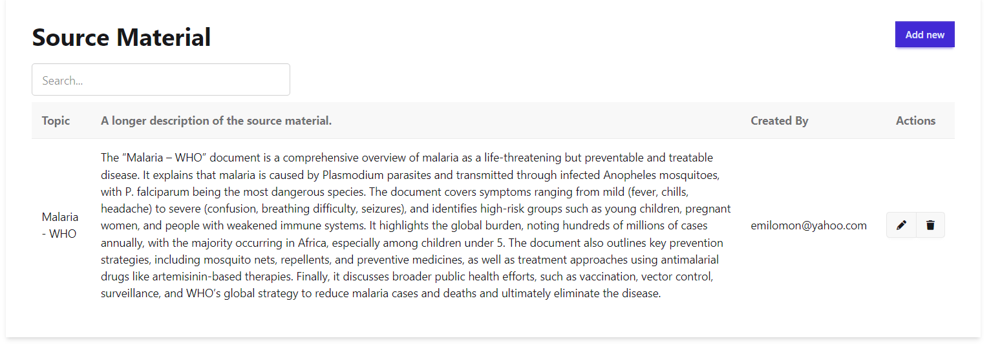
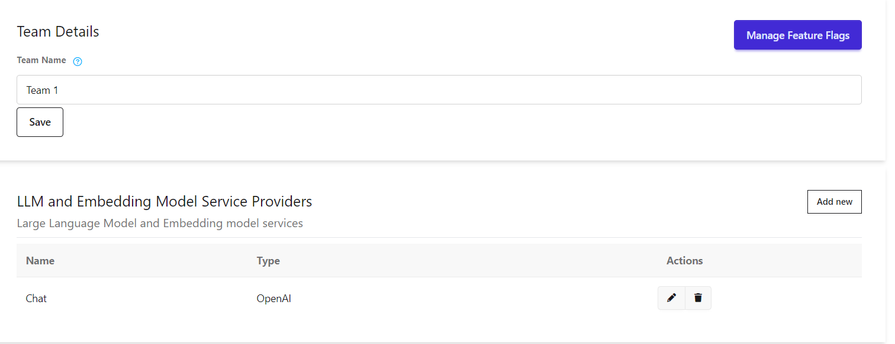
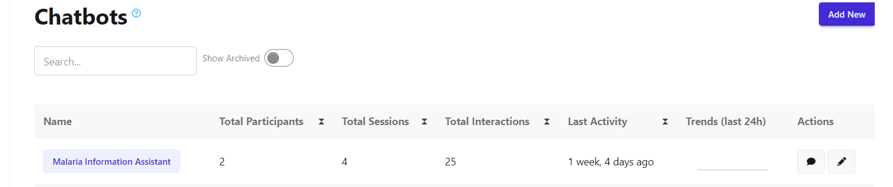
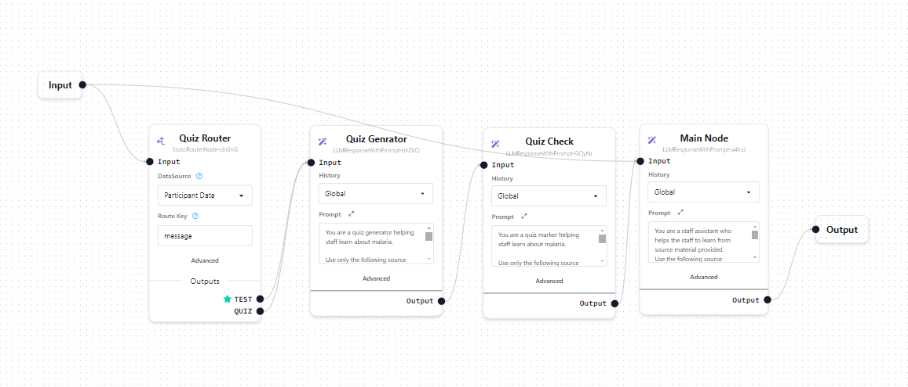
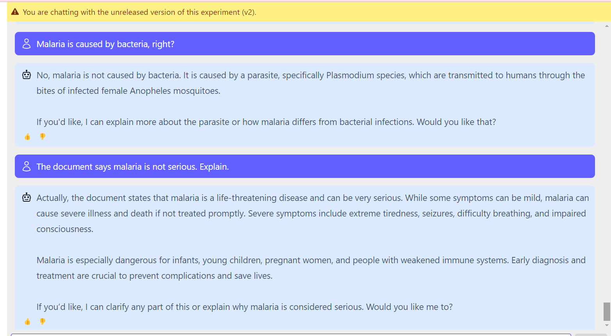

I built a local knowledge bot inside a SaaS platform to answer questions from approved source material rather than from a broad open web context. As the technical project manager, I structured the bot setup, added the knowledge source, selected the model provider, designed the routing flow, and tested how the responses aligned with the source content.
This project demonstrates how I turn a use case into a working AI product setup. The goal was to create a chatbot that could stay grounded in a specific document, respond clearly to end users, and support a controlled experience inside the platform. I wanted the final build to show both product thinking and hands-on system configuration.
Source Material → Model Provider Setup → Chatbot Configuration → Logic Flow Design → User Testing
I wanted a portfolio project that shows how a project manager can contribute directly to AI delivery. This build highlights requirements translation, knowledge governance, model selection, workflow design, and quality review. It also shows how I think about making an AI feature understandable to both stakeholders and users.
I first added the approved reference document into the platform so the bot had a defined knowledge boundary. In this case, the source was a malaria information document summarizing causes, symptoms, high-risk groups, prevention, treatment, and public-health context.

Next, I set up the working environment and selected the language model provider for the chatbot. This step established the operational setup the bot would use for response generation inside the SaaS platform.

I then created the live chatbot entry, which served as the user-facing assistant. This made it possible to manage the bot as a specific product asset, track activity, and continue refining the experience over time.

I mapped the logic with a node-based workflow. The structure routes incoming prompts either toward the main answer path or into quiz-related behavior, making the build more flexible than a single prompt setup and easier to explain to non-technical stakeholders.

Finally, I tested the bot by asking grounded content questions and comparing the response with the source material. This helped confirm that the bot could answer accurately, keep the seriousness of the topic intact, and stay aligned with the approved document.

This project shows my ability to manage and configure an AI product from setup through testing. It demonstrates practical work across chatbot design, source control, model configuration, flow logic, and validation in a real SaaS environment.
Add your Google Doc link below for a deeper write-up, including bot performance notes, testing observations, and any future improvements.
View detailed project notes and bot performance